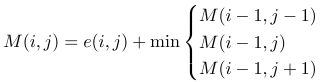

The purpose of content-aware retargeting is to resize images and videos for different aspect ratios while still retaining the important features of the content. Cropping or scaling produces unwanted distortions in the important regions, whereas content-aware retargeting creates more aesthetically satisfying results by preserving the important contents. Seam carving is a popular technique applied to content-aware retargeting and we implement dynamic programming and minimum-cost graph-cut algorithms, and present a heuristic approach based on this technique.
Dynamic Programming |
Minimum S/T graph cut |
Look-ahead energy |
|
Dynamic programming is used in image retargeting. Suppose we have the energy function of the image, we compute the cumulative energy matrix M using the equation below and do backtracking to find the optimal seam for removal. |
Minimum S/T graph cut, equivalently Maximum-flow, is used in video retargeting. A video frame can be represented by a node graph (see below), where the edges are energy gradient of the image. The graph cut method provides an optimal cut like the dynamic programming approach, and can be extended to process a sequence of video frames as a 3D graph. |
Rather than constructing a 3D video cube, our method looks ahead of video frames and takes a linear combination of energies from future frames. The time for seam removals are much faster than a 3D graph cut. |
|  |
Documents |
Executable Code Used in Project |